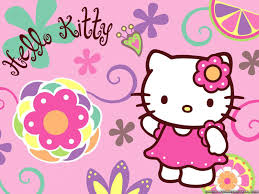

About Hello Kitty
Hello Kitty is awesome! She is in the 3rd grade and has a twin sister, Mimmy. They were born on the 1st of November, which means they are Scorpios! She also has a pet cat named Charmmy Kitty.
This is Hello Kitty
Hello Kitty's Characteristics
- She wears a bow
- She has a lot of fun with her friends
- She is sweet as can be!
Hello Kitty's Friends
Hello Kitty has amazing friends. Her best friend and boyfriend is Dear Daniel. They have known eachother since childhood. Click on the links to learn more about her friends!: